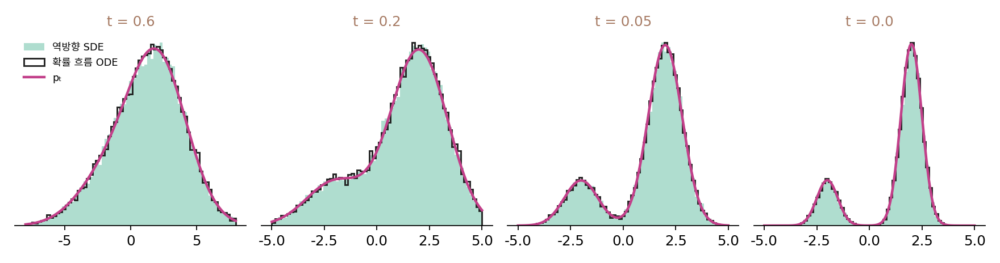

확률 흐름 ODE: 바람 없이 같은 분포로
역방향 SDE에서 잡음을 빼면 점들이 꼭대기로 몰렸다. 그런데 처음부터 잡음 없이 걷던 거꾸로 흐르기는 데이터 분포에 그대로 닿았다. 둘 다 「잡음을 넣지 않는」 걸음인데 무엇이 다를까? 레이더 비유로 말하면, 역방향 SDE의 잡음은 안개 속을 걷는 참가자를 흔드는 바람이다. 바람이 멎으면 참가자는 모두 볼 한가운데로 몰려야 할까?
바람을 끄는 두 방법
평면에 드래곤볼 일곱 개가 비중 0.12~0.18로 숨어 있다(볼마다 폭 0.4). 짙은 안개(σ = 8) 속에 흩어진 참가자 4,000명이 안개를 0.01까지 500걸음에 걷으며 세 규칙으로 걷는다. 걸음마다 안개가 걷히는 양은 그 걸음의 잡음 분산 감소분이다. 역방향 SDE는 그만큼 바늘 쪽으로 걷고 같은 분산의 바람을 맞는다. 둘째 규칙은 바람을 그냥 끈다. 셋째 규칙은 바람을 끄는 대신 바늘 쪽 걸음을 절반으로 줄인다.
| 규칙 | 볼마다 도착한 비율과 참 비중의 차이 (총변동) | 가운데 볼 비율 (참값 0.12) | 볼 안의 퍼짐 (참값 0.4) |
|---|---|---|---|
| 역방향 SDE (바람 있음) | 0.017 | 0.12 | 0.39 |
| 바람만 끔 | 0.586 | 0.64 | 0.24 |
| 바람을 끄고 걸음을 절반으로 | 0.019 | 0.13 | 0.39 |
총변동은 두 비율 표의 차이 절댓값을 더해 반으로 나눈 값이고, 0이면 두 표가 똑같다. 바람만 끈 참가자들은 64%가 한가운데 볼에 몰리고 볼 안에서도 뭉친다. 걸음을 절반으로 줄인 참가자들은 바람 없이도 역방향 SDE와 같은 비율, 같은 퍼짐으로 도착한다. 걸음을 절반으로 줄인 규칙은 역방향 SDE에서 랑주뱅 걸음 한 쌍(바늘 몫 절반과 바람)을 통째로 뺀 것이고, 바람만 끈 규칙은 쌍에서 바람만 빼고 바늘 몫은 남긴 것이다.
거꾸로 흐르기에 붙은 이름
역방향 SDE에서 랑주뱅 걸음 한 쌍을 빼는 일을 일반적인 꼴에서 하면, 바늘 몫 g²sΔt가 절반이 되고 잡음 항이 사라진다.
이 책의 기본 일정(f = 0, g² = 2D)을 넣으면 x + DsΔt, 곧 잡음이 섞이며 퍼지는 흐름의 속도 v = −Ds를 거꾸로 따라가던 바로 그 걸음이다. 잡음이 하나도 없는 보통의 미분방정식, 곧 ODE(ordinary differential equation, 상미분방정식의 머리글자)인데, 매 순간 점들의 분포는 역방향 SDE와 똑같이 pt다. 이 식을 확률 흐름 ODE (잡음 섞인 분포의 흐름을 잡음 없이 되짚는 상미분방정식 / probability flow ODE)라 한다. 송과 동료들은 2021년 논문에서 역방향 SDE와 같은 분포에서 표본을 뽑는 이 ODE를 함께 내놓으며, 이 식으로는 그림의 가능도를 정확히 계산할 수 있고 표본을 더 적은 계산으로 뽑을 수 있다고 적었다.

그러면 다양성은 어디서 올까? ODE에서는 출발점이 도착점을 완전히 정한다. 0.3에서 출발한 점을 확률 흐름 ODE로 두 번 걸으면 두 번 다 1.620에 닿고, 역방향 SDE로 걸으면 씨앗(난수)에 따라 2.364, 2.318처럼 달라진다. 확률 흐름 ODE가 내놓는 그림의 다양성은 모두 출발점, 곧 짙은 잡음 속에 흩어진 처음 잡음에서 온다. 바람은 다양성의 원천이 아니라 같은 분포에 이르는 또 하나의 걸음 방식이다.
ML에서: 그림과 잡음을 오가는 지도
확률 흐름 ODE는 시간을 어느 쪽으로든 풀 수 있다. −2(비중 0.2)와 +2(비중 0.8), 폭 0.5인 두 봉우리 데이터를 D = 4로 퍼뜨린 경우에 점 −2.3, 1.1, 2.0, 2.6을 이 ODE로 t = 0에서 1까지 앞으로 풀면 −4.26, −1.192, 2.135, 5.464에 닿고, 거기서 거꾸로 풀면 처음 네 점이 10⁻¹²보다 작은 차이로 돌아온다. 그림 한 장을 잡음 하나로, 그 잡음을 다시 같은 그림으로 옮기는 짝 맞춘 지도인 셈이다. 그래서 실제 그림을 잡음 쪽으로 보냈다가 다시 그림 쪽으로 풀어 볼 수 있고, 송과 동료들이 말한 가능도 계산도 이 성질에 기댄다. 역방향 SDE에는 이런 지도가 없다. 걸음마다 새 잡음이 들어가니 같은 출발점에서도 매번 다른 그림이 나온다.
문제 9. 발표 순서 정하기
네 조가 한 학기 동안 매주 발표한다. (가) 매주 제비를 새로 뽑아 순서를 정하는 방법과, 첫 주에만 제비를 뽑고 그 뒤로는 매주 순서를 한 칸씩 돌리는 방법이 있다. 두 방법에서 민준이네 조가 5주째에 첫 번째로 발표할 확률은 각각 얼마인가? (나) 두 방법은 무엇이 다른가?

매주 새로 뽑으면 1/4이죠. 한 번만 뽑으면 그 뒤로는 정해진 대로니까… 무작위가 없으니 확률이 아니라 정해진 거 아닌가요?

첫 주에 뽑기 전에 서서 5주째를 내다보면요?

아, 첫 주 제비가 네 가지 가운데 하나로 나오니까 5주째 순서도 네 가지 가운데 하나예요. 그래서 역시 1/4이에요.

(나)는 한 주씩 떼어 보면 두 방법 모두 매주 1/4이야. 다른 건 주와 주 사이의 관계지. 한 번만 뽑으면 이번 주 순서를 알면 다음 주 순서도 정해지고, 매주 뽑으면 아무 관계가 없어.

무작위가 한 번만 들어가도, 그 무작위가 처음에 고르게 흩어져 있으면 매 순간의 분포는 같을 수 있어요.
조별 과제 역할을 첫 주에 정하고 돌아가면서 맡든, 매주 새로 정하든 한 학기 동안 각자 맡는 횟수는 비슷한 거랑 같네요.
문제 10. 바람 없는 걸음은 무너지는가
데이터가 N(0, 1)이고 D = 1.5로 잡음을 섞어, 시간 t의 분포가 pt = N(0, 1 + 3t)이다(t = 1에서 N(0, 4)). 확률 흐름 ODE를 t = 1에서 0까지 풀면, N(0, 4)에서 뽑은 출발점들은 어떤 분포에 닿는가?
데이터가 N(0, 1)이니까 스코어는 −x예요. 걸음이 x + 1.5 × (−x)Δt니까 시간 1을 거꾸로 오면 x(0) = x(1)e^(−1.5)예요. 표준편차가 2 × 0.223 = 0.446이에요. 데이터보다 훨씬 좁아요. 역시 바람이 없으면 쪼그라드나 봐요.
그 스코어는 몇 시의 분포예요?

아… 데이터 분포요. 시간 t의 분포는 N(0, 1 + 3t)라서 스코어가 −x/(1 + 3t)예요.
민준 학생, 그 스코어로 다시 풀어 봐요.
걸음이 x + 1.5xΔt/(1 + 3t)… 풀면 x가 √(1 + 3t)에 비례해요. t = 1에서 0으로 오면 x(0) = x(1)/2예요.

N(0, 4)를 반으로 줄이면 N(0, 1)이에요. 20만 개로 돌려도 표준편차 1.001이고요. 무너지지 않아요. 데이터 스코어로 돌렸을 때만 0.446이 나와요.

랑주뱅 걸음에서 잡음을 끈 것과 무엇이 달라요?

랑주뱅은 지형이 하나로 고정돼 있어서 잡음을 끄면 모두 꼭대기로 가요. 확률 흐름 ODE는 지형이 매 순간 바뀌고, 바늘 몫도 역방향 SDE의 절반이에요. 출발점이 N(0, 4)로 흩어져 있으니 그 흩어짐이 고르게 줄어들 뿐 사라지지 않아요.
발표 순서 문제랑 같네요. 제비는 처음 한 번 뽑았고, 그 뒤는 정해진 규칙대로 가도 매 순간의 분포는 맞아요.
문제 11. 출발점이 틀렸을 때
실제로는 t = 1의 분포를 정확히 모르니, 평균과 분산이 같은 가우시안에서 출발한다. 데이터는 −2(비중 0.2)와 +2(비중 0.8), 폭 0.5이고, 이번에는 잡음을 옅게 섞어 t = 1의 잡음 분산이 2다(D = 1). 이 분포는 아직 두 봉우리 꼴이 남아 평균 1.20, 분산 4.81인 가우시안과 꽤 다르다. 스코어는 정확히 알고, 가우시안에서 뽑은 점 2만 개를 거꾸로 걷는다. (가) 확률 흐름 ODE(λ = 0)와 역방향 SDE(λ = 1)로 걸으면, |x|의 표준편차와 |x| > 3.5인 비율은 참값(0.499, 0.14%)과 얼마나 다른가? (나) 랑주뱅 쌍을 더 넣으면(λ = 3, 10)? (다) 그림을 뽑는 모델이 걸음마다 잡음을 다시 넣는 까닭을 이 결과로 설명하라. (풀어 본 뒤 위젯 2의 「문제 11 불러오기」로 ODE 경우를 확인해 보자.)
확률 흐름 ODE랑 역방향 SDE는 같은 분포를 지난다고 했으니까 결과도 같겠죠.
그 말은 어떤 조건에서 한 말이었죠?
출발 분포가 정확히 p₁일 때요. 지금은 가우시안에서 출발하니까 그 조건이 깨졌어요.

돌려 볼게요. ODE는 |x|의 표준편차 0.573, |x| > 3.5가 0.84%예요. 참값 0.14%의 여섯 배예요. SDE는 0.506과 0.19%로 훨씬 가까워요. λ = 3이면 0.498, 0.10%, λ = 10이어도 0.498, 0.10%예요.

정확한 p₁에서 출발하면 ODE도 0.498과 0.13%였어. 그러니까 ODE의 어긋남은 전부 출발점 탓이야.
왜 SDE는 출발점의 잘못을 덜 물려받을까요?
ODE는 출발점이 도착점을 정하니까, 출발 분포가 틀린 만큼 도착 분포도 그대로 틀려요. SDE는 걸음마다 그 시간의 pt를 정상 분포로 갖는 랑주뱅 걸음을 하나씩 얹은 거라, 걸을수록 점들이 pt 쪽으로 다시 섞여요. 틀린 출발을 잊는 거예요.

자리 바꾸기를 많이 할수록 처음 자리를 잊던 거랑 같네요! 그러면 (다)는, 실제 모델은 출발 분포도 조금 틀리고 신경망이 배운 바늘도 조금씩 틀리니까, 걸음마다 섞어서 그 틀림이 쌓이지 않게 하려는 거예요.
그래요. 바늘이 정확하고 출발이 정확하면 잡음은 넣어도 그만, 안 넣어도 그만이에요. 무언가 틀렸을 때 잡음을 넣는 길은 그 틀림을 잊고, 넣지 않는 길은 끝까지 기억해요. 대신 ODE는 같은 출발점이면 같은 그림이라는 지도를 얻고요. 어느 쪽을 고를지는 무엇이 더 필요하냐에 달렸어요.
수치해석 수업에서 반복법이 처음 값을 잊는 성질, 수렴하는 반복의 오차가 걸음마다 줄어들던 것과 비슷하네요.